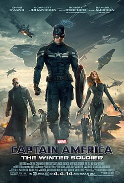
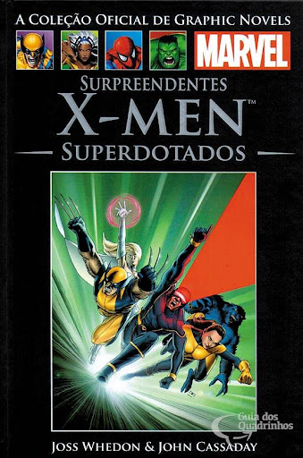

Minha história com a Marvel
Olá, eu sou Murilo dos Santos, criador deste site. Aqui você vai me encontrar constantemente
divagando sobre quadrinhos e seus personagens, portanto acho que faz sentido contar um pouco
sobre minha história com eles e por que são tão importantes para mim.
Durante a minha infância, o desenvolvimento das minhas habilidades de leitura foi uma das grandes
dores de cabeça da minha mãe. Eu era o tipo de criança que preferia mil vezes sentar na frente da televisão
para assistir Cartoon Network ou Disney XD do que ler um livro.
Não importava o quanto minha mãe tentasse me fazer desenvolver um prazer pela leitura, seus esforços
pareciam cada vez mais fúteis.
Isso se manteve assim até mais ou menos 2014, quando eu, em mais uma de minhas inúmeras horas de
televisão, fiquei entediado e decidi procurar por algo diferente para assistir e acabei vendo
Capitão América: O Soldado Invernal no Telecine.
O filme fascinou a minha mente de 7 anos como nada que eu havia visto até então, e o personagem Capitão
América se tornou um ícone e modelo para mim até hoje. O filme foi meu hiperfoco por múltiplas semanas, e
quando
descobri que as histórias eram baseadas em quadrinhos, eu absolutamente precisava começar a lê-los.
Assim, minha mãe me levou até uma livraria para que eu comprasse um quadrinho pela primeira vez.
Infelizmente, nessa ocasião eu não encontrei um quadrinho do Capitão nas prateleiras, mas não saí de lá de
mãos
vazias: ganhei a edição 36 da coleção de Graphic Novels da Salvat, chamada Surpreendentes X-Men:
Superdotados.

Por mais que estivesse decepcionado por não ter conseguido um quadrinho sobre o personagem
que queria, aquela edição dos X-men me surpreendeu.
Toda a história é focada na descoberta de uma cura mutante e em como os personagens lidam
com isso. Afinal, por mais que alguns mutantes mantenham uma aparência humana e sejam capazes de
ser indistinguíveis de pessoas comuns, muitos possuem características monstruosas que os impedem
de viver normalmente, como Hank McCoy, o Fera, que tem a aparência de um felino azul.
A discussão sobre mudar quem somos e sobre se vale a pena deixar de ser o que você é
para se encaixar em padrões sociais foi extremamente interessante para o meu eu de 7 anos, e foi uma
das primeiras vezes em que pensei profundamente sobre um assunto.
A história me marcou profundamente, mas outra coisa no livro me intrigou: o passado dos
personagens.
Na edição, diversos eventos anteriores da cronologia eram mencionados, o que me deixou extremamente
curioso:
quem é Jean Grey? Onde fica essa tal de Genosha e o que aconteceu lá? Eles falam o tempo todo desse Doutor
Xavier, mas ele não aparece em momento algum, o que aconteceu com ele?
Eu precisava dessas respostas, então comecei a pesquisar, e ler mais, e mais perguntas surgiam; então
eu pesquisava mais, e lia mais, e mais perguntas surgiam. E eu continuei nesse loop ad infinitum por anos e
anos.
(E sinceramente, estou nele até hoje)

Nessa minha jornada pelo universo Marvel, eu gastei inúmeras horas lendo histórias que me marcaram
profundamente, a ponto de essas narrativas se tornarem parte integral da minha vida e da minha
identidade.
Esses quadrinhos fomentaram meu interesse pela leitura e me apresentaram histórias e conceitos que
expandiram minha visão de mundo e me tornaram uma pessoa melhor e mais inteligente.
Se devo criar um site sobre algo que me marcou, esse algo definitivamente seria a Marvel e seus
quadrinhos.